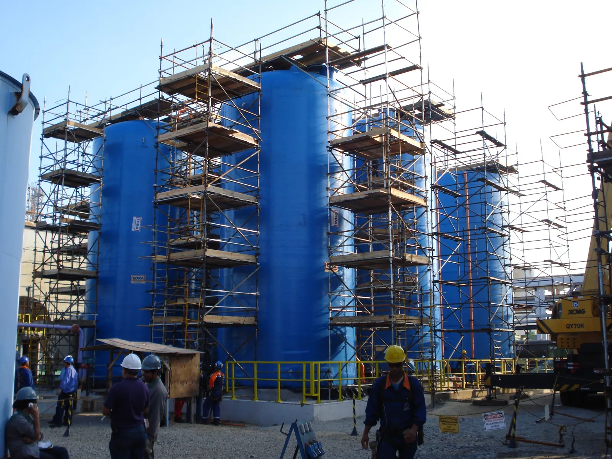

Escolha de sistema
Andaime multidirecional ou fachadeiro: qual usar em cada obra
A escolha é decidida pela geometria da frente de serviço. Parede reta, longa e sem interferência é território do andaime fachadeiro: ele é modular, monta rápido e usa poucas peças diferentes. Superfície curva, recuo, sacada, equipamento industrial e planta irregular são território do multidirecional, porque a fixação por garra aceita ângulo variável e fecha arranjo que o quadro fixo não fecha.
Quando a obra tem os dois casos, o normal é usar os dois sistemas, cada um na frente onde rende mais. Escolher um só por preço de diária costuma sair caro na hora da montagem, que é onde o tempo de equipe aparece.

Como cada sistema funciona
O fachadeiro é montado a partir de quadros pré-fabricados, encaixados verticalmente e travados por diagonal. O vão entre quadros é fixo, o piso é padronizado e a montagem é repetitiva. Isso torna a montagem rápida, porque a equipe repete o mesmo gesto pano a pano.
O multidirecional é montado peça a peça, a partir de montantes com pontos de fixação distribuídos ao longo do tubo. Travessa e diagonal entram nesses pontos em ângulos diferentes, o que permite montar planta baixa irregular, anel em torno de equipamento e plataforma em nível variável.
O sistema Tec Lit é multidirecional com fixação por garras. A garra dispensa braçadeira, parafuso e chave de catraca, o que reduz o tempo de montagem em relação ao tubo e braçadeira e melhora o travamento em piso de madeira.
Quando o fachadeiro é a escolha certa
- Fachada reta e contínua, com pano de parede longo e altura constante.
- Obra residencial ou comercial de geometria regular, sem sacada em balanço nem recuo.
- Serviço de pintura, revestimento, chapisco e reboco, em que a plataforma acompanha o pano.
- Frente longa em galpão, muro e cobertura de altura uniforme.
- Obra em que a velocidade de montagem vale mais que a adaptação, porque a geometria não pede ajuste.
O limite do fachadeiro aparece quando a fachada deixa de ser plana. Sacada, marquise, viga aparente, mudança de alinhamento e recuo obrigam a complementar o sistema, e a partir de certo ponto o complemento vira a maior parte do arranjo.
Quando o multidirecional é a escolha certa
- Superfície cilíndrica ou poligonal: tanque, digestor, silo, chaminé, torre e vaso.
- Planta industrial com tubulação, plataforma existente e interferência em todos os níveis.
- Terreno em declive ou piso irregular, onde a base precisa de ajuste ponto a ponto.
- Interior de equipamento, com montagem autoportante apoiada no fundo.
- Frente com nível de plataforma variável, acompanhando o serviço em vez do pavimento.
- Fachada com sacada, recuo e geometria fora de esquadro.
O ganho não está apenas em conseguir montar. Está em montar sem improviso: cada ponto de fixação é projetado para receber carga, o que não acontece quando a solução é amarrar peça extra com braçadeira em local não previsto.
Comparação direta entre os dois sistemas
| Critério | Fachadeiro | Multidirecional |
|---|---|---|
| Geometria que atende | Parede reta e contínua | Reta, curva, irregular e interna |
| Montagem | Rápida e repetitiva, por quadro | Peça a peça, com ajuste por ponto |
| Variedade de peça | Poucos tipos | Mais tipos, com mais combinações |
| Nível de plataforma | Fixo pelo módulo do quadro | Ajustável ao longo do montante |
| Superfície cilíndrica | Exige complemento | Fecha o anel diretamente |
| Interior de equipamento | Pouco adequado | Arranjo autoportante em anel |
| Obra típica | Fachada, galpão, muro | Indústria, parada, tanque, torre |
E o tubo e braçadeira, onde entra?
O tubo e braçadeira continua sendo o sistema mais flexível de todos, porque a braçadeira aceita qualquer ponto do tubo e qualquer ângulo. O custo dessa flexibilidade é o tempo: cada conexão exige aperto com chave, e a montagem é sensivelmente mais lenta que a de um sistema com encaixe.
Ele resolve bem complemento, reforço, arranjo pontual e situação em que nenhum módulo fecha. Como sistema principal de uma frente grande, perde para o multidirecional em produtividade e em uniformidade de travamento.
Muita obra usa os três: fachadeiro no pano reto, multidirecional na parte irregular e tubo e braçadeira no acerto final. Isso é normal, e é melhor que forçar um sistema onde ele não rende.
Como testar a escolha antes de fechar
Antes de decidir, percorra a frente de serviço com seis perguntas na mão. Elas separam com clareza os casos em que o quadro fixo resolve dos casos em que ele vai exigir complemento a cada dois metros:
- A superfície é plana e contínua do início ao fim da frente, ou muda de alinhamento em algum ponto?
- O nível de trabalho é o mesmo em toda a extensão, ou acompanha equipamento em alturas diferentes?
- Existe sacada, marquise, viga aparente, tubulação ou plataforma que atravesse o plano do andaime?
- O piso de apoio é regular, ou tem desnível, canaleta, base de máquina e obstáculo?
- A estrutura recebe amarração em pontos regulares, ou os pontos disponíveis são poucos e dispersos?
- A frente vai mudar de configuração durante a obra, exigindo remanejamento parcial?
Resposta positiva em duas ou mais dessas perguntas já indica multidirecional na parte afetada. Não é preciso trocar o sistema da obra inteira: o normal é dividir a frente e usar cada sistema onde ele rende.
Vale também olhar quem vai montar. Equipe acostumada a um sistema monta mais rápido nele, e essa familiaridade às vezes vale mais que a diferença teórica de produtividade entre os dois.
O erro mais comum na escolha
O erro que mais aparece é escolher pelo valor do material sem olhar o custo da montagem. Um sistema mais barato por peça que exige o dobro de horas de equipe termina mais caro, e ainda ocupa a frente por mais tempo, o que atrasa o serviço seguinte.
A conta certa junta quatro coisas: material, horas de montagem, tempo de ocupação da frente e desmontagem. Em obra industrial com janela curta, o tempo de ocupação costuma pesar mais que todo o resto.
Normas citadas neste artigo
- NR 18, Segurança e Saúde no Trabalho na Indústria da Construção
Este texto é orientativo e não substitui o texto oficial das normas nem o procedimento da obra. Em caso de divergência, prevalece a redação vigente da norma.
Autoria e revisão
Publicado por Tec Lit Serviços, empresa de locação, venda, fabricação e montagem de andaime em Aracruz, ES, no mercado desde 1992.
Revisão técnica: [[PENDENTE: nome, função e registro do responsável técnico que revisa os artigos]]